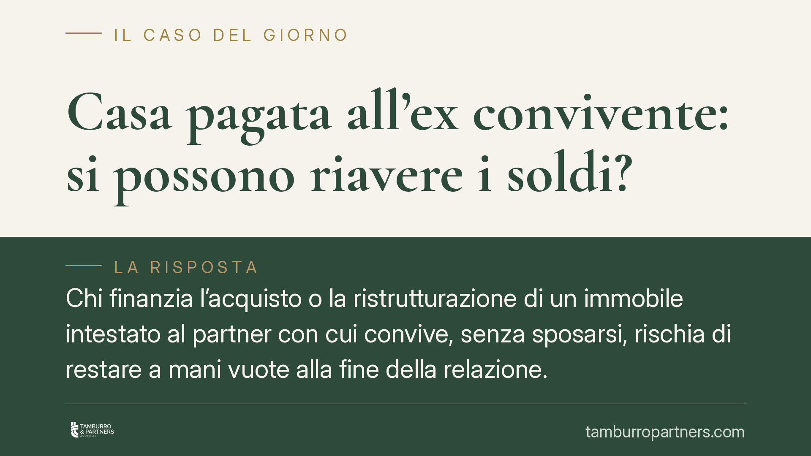

Casa pagata all'ex convivente: si possono riavere i soldi?
Chi finanzia l'acquisto o la ristrutturazione di un immobile intestato al partner con cui convive, senza sposarsi, rischia di restare a mani vuote alla fine della relazione. Una recente pronuncia di merito conferma però che la via del recupero esiste: l'azione di arricchimento senza causa. Vediamo quando e come funziona.

Il caso
Una coppia convive senza contrarre matrimonio. Uno dei due sostiene, in tutto o in gran parte, i costi di acquisto e ristrutturazione di una casa che viene però intestata quasi interamente all'altro, spesso per ragioni fiscali o di accesso al credito. Finita la relazione, chi ha pagato chiede indietro i propri soldi.
È una situazione ricorrente. Una recente pronuncia del Tribunale di Genova ha condannato l'ex convivente intestatario a restituire una somma vicina ai 100.000 euro alla ex compagna che aveva finanziato l'operazione, riconoscendole l'arricchimento senza causa.
(Nota redazionale: gli estremi esatti della sentenza sono in corso di verifica; il principio applicato è comunque consolidato nella giurisprudenza di legittimità.)
Inquadramento normativo
Il punto giuridico è capire *a che titolo* è avvenuto il pagamento. Le ipotesi in gioco sono tre.
Donazione. Se il versamento fosse una liberalità, non ci sarebbe nulla da restituire. Ma la donazione di somme non modeste richiede forma solenne (atto pubblico) e, soprattutto, l'intento di donare (*animus donandi*), che va provato da chi lo invoca. In mancanza, la tesi della donazione cade.
Obbligazione naturale (art. 2034 c.c.). Le contribuzioni tra conviventi che rispondono a un dovere morale e sociale, e sono proporzionate alle condizioni della coppia, non sono ripetibili: chi le ha eseguite non può chiederle indietro. Rientrano qui le spese ordinarie della vita comune (bollette, spesa, piccole manutenzioni). Non vi rientra, invece, un esborso ingente e sproporzionato destinato ad accrescere il patrimonio personale dell'altro, come l'acquisto di un immobile intestato solo a lui.
Arricchimento senza causa (art. 2041 c.c.). È la norma applicata nel caso genovese. Consente a chi ha subìto un impoverimento di ottenere un indennizzo quando un altro soggetto se ne è avvantaggiato senza una giustificazione giuridica. I presupposti sono tre e devono coesistere:
- un impoverimento di chi agisce;
- un corrispondente arricchimento dell'altro;
- il nesso tra i due fatti e l'assenza di una causa che giustifichi lo spostamento di ricchezza.
Escluse donazione e obbligazione naturale, resta uno spostamento patrimoniale privo di causa: da qui l'obbligo di restituzione.
Implicazioni pratiche
La convivenza di fatto non genera gli automatismi economici del matrimonio. Non esiste comunione dei beni, non esiste assegno di mantenimento tra ex conviventi.
Va però evitata una semplificazione: la Legge 76/2016 (art. 1, comma 65) riconosce al convivente che versi in stato di bisogno il diritto agli alimenti a carico dell'altro, per un periodo proporzionato alla durata della convivenza. Si tratta di un istituto diverso e più limitato dell'assegno di mantenimento tra coniugi, legato al solo stato di necessità.
Sul fronte dei rimborsi, la conseguenza è netta: chi ha pagato per un bene altrui non ha un diritto "automatico" alla restituzione. Deve costruire una causa giuridica, e l'art. 2041 c.c. resta la via principale quando manca ogni altro titolo.
Attenzione ai tempi. L'azione di arricchimento senza causa si prescrive nel termine ordinario di dieci anni (art. 2946 c.c.). Il momento da cui il termine decorre (*dies a quo*) è discusso: può individuarsi nel singolo pagamento oppure, secondo un orientamento, nella cessazione della convivenza, quando lo spostamento patrimoniale perde ogni giustificazione. Prima quest'analisi viene fatta, minore è il rischio di trovarsi il diritto già estinto.
Cosa fare in concreto
- Conserva la documentazione di ogni versamento: bonifici, ricevute, contabili, fatture della ristrutturazione. La prova dell'impoverimento è a carico di chi agisce.
- Indica sempre la causale dei pagamenti significativi. Una causale chiara ("anticipo acquisto immobile") aiuta a escludere la donazione.
- Regola la convivenza per iscritto. Un contratto di convivenza ai sensi della L. 76/2016 può disciplinare in anticipo i rapporti patrimoniali e prevedere restituzioni.
- Valuta subito i tempi con un professionista: il termine decennale può decorrere già dai singoli esborsi.
- Non affidarti all'intestazione "di comodo". Intestare un bene al partner per ragioni fiscali espone al rischio di perderne il valore economico.
Un punto fermo
Pagare la casa del partner non equivale a regalargliela, ma neppure garantisce un rimborso. La differenza la fanno la prova dei versamenti, la loro qualificazione e il rispetto dei termini. Chi si trova in questa situazione ha strumenti per agire, purché intervenga per tempo e con le carte in ordine.
Contributo informativo a cura di Tamburro & Partners Avvocati - Avv. Giuseppe Tamburro. Non costituisce parere legale.
Ogni famiglia ha il suo equilibrio.
Separazione, divorzio, affidamento, assegno: se vuoi un confronto riservato su una specifica situazione, scrivi allo studio. Ti rispondiamo entro un giorno lavorativo.